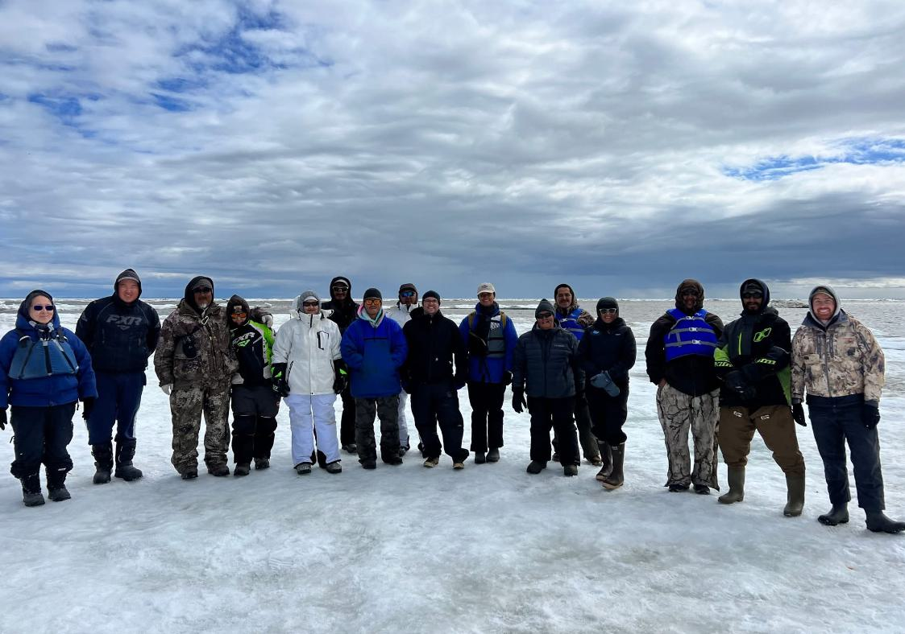
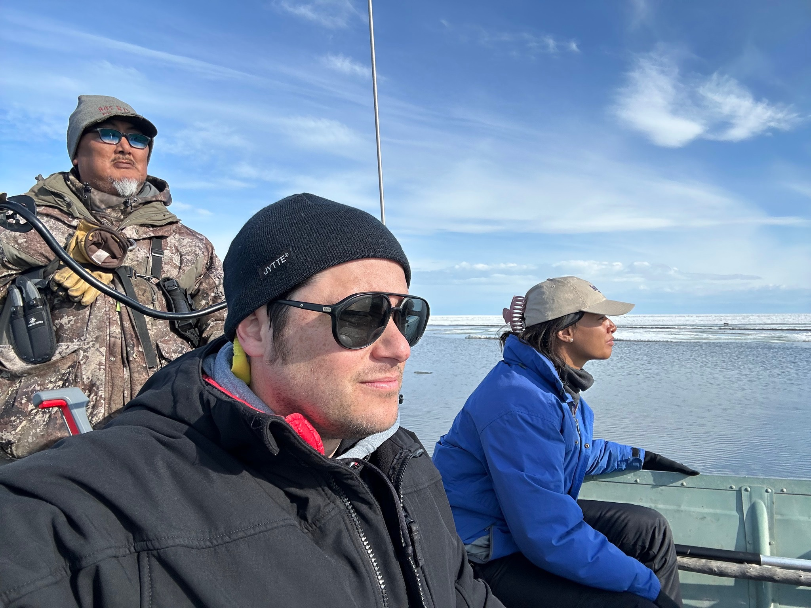
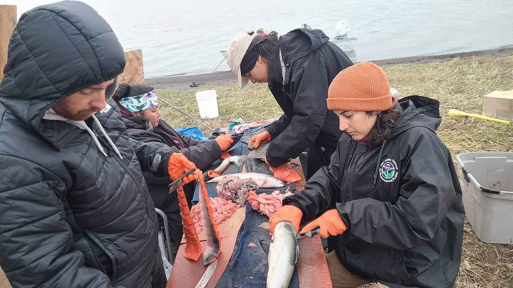
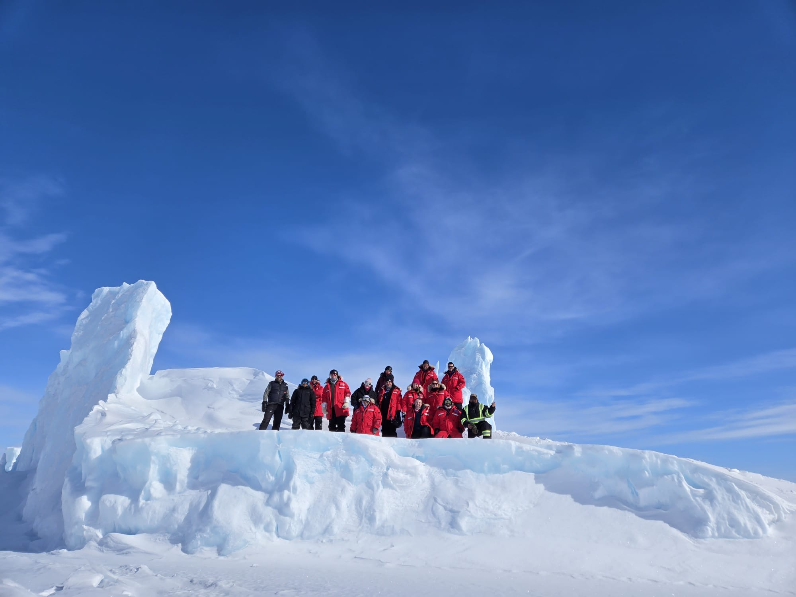
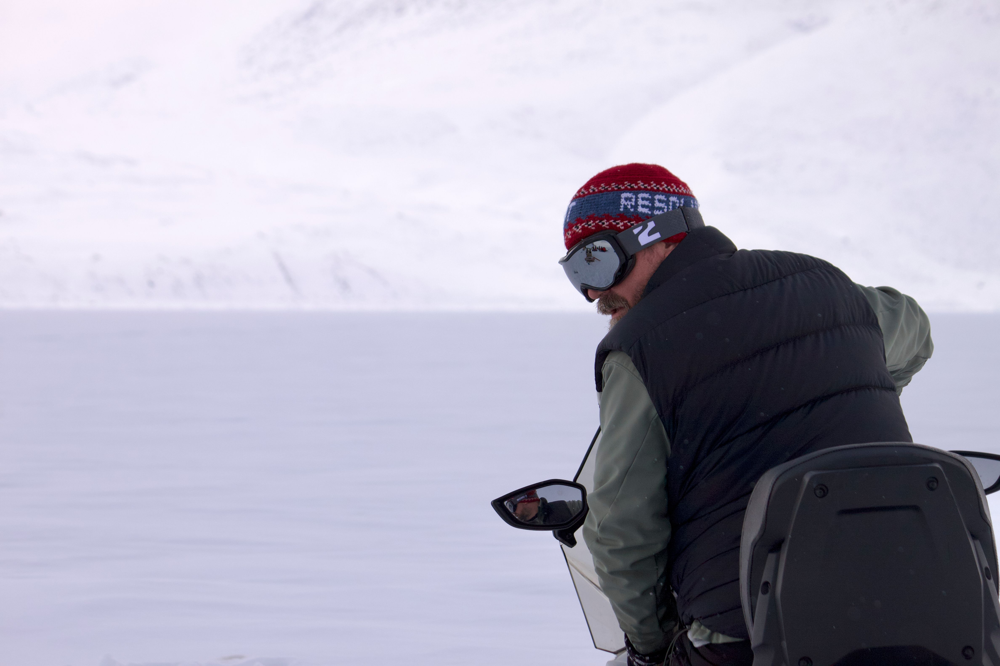
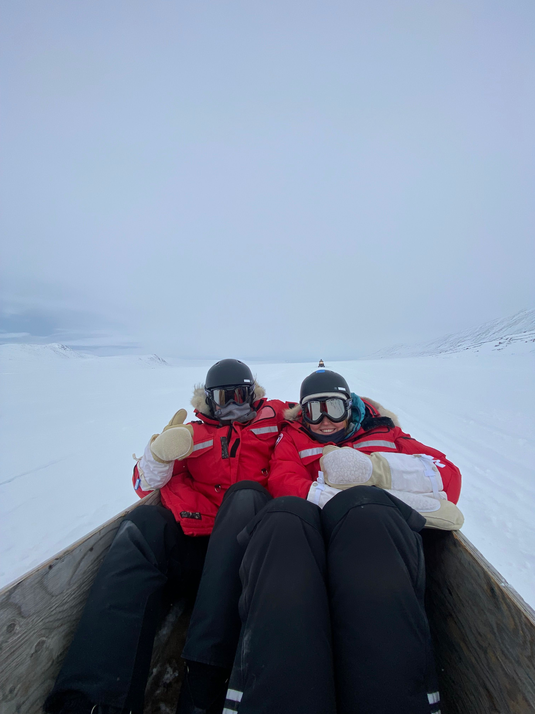
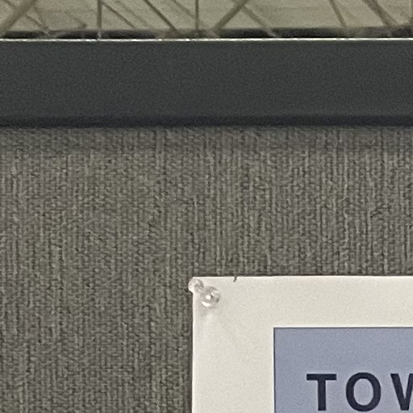
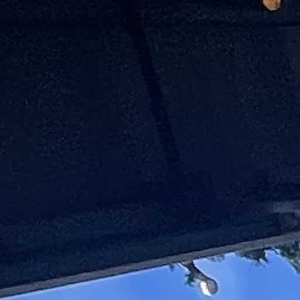
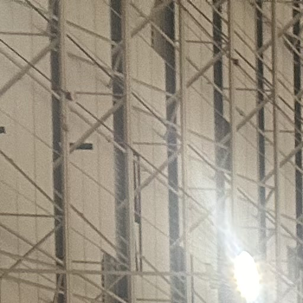

Kivalina
Master's Thesis · June 2023 & Feb 2024



Master's thesis examining sea ice thickness and subsistence access using
ICESat-2 altimetry and community interviews in Kivalina, Alaska.
Field visits in June 2023 and February 2024.
Qikiqtarjuaq Field School



Sentinel North Advanced Field School on Arctic Sea Ice, April 2025.
Ten days of interdisciplinary fieldwork in Qikiqtarjuaq, Nunavut — studying
sea ice across scales with researchers, Inuit knowledge holders, and the community.
Utqiaġvik
Scoping Aug 2025 · Field Visit Jan 2026

Research scoping trip (August 2025) and field visit (January 2026) along
Alaska's Arctic coast — community engagement and environmental observation
in my hometown.
AGU 2025 — New Orleans
Poster Presentation · Dec 2025



Sharing the U-Net model I trained to automatically detect landfast ice edge in
Sentinel-2 optical imagery at the American Geophysical Union (AGU) Fall Meeting.